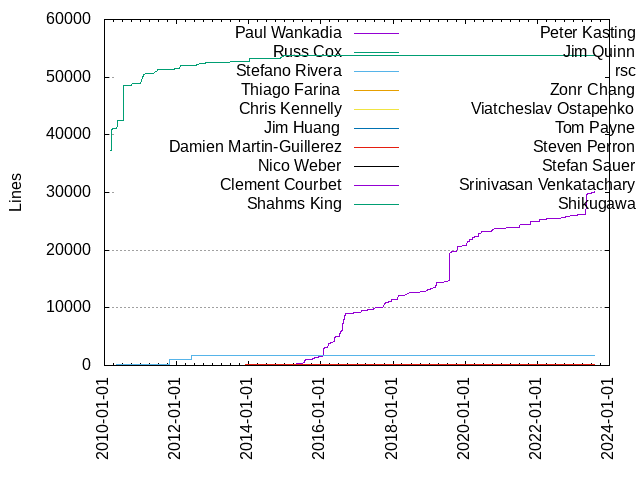
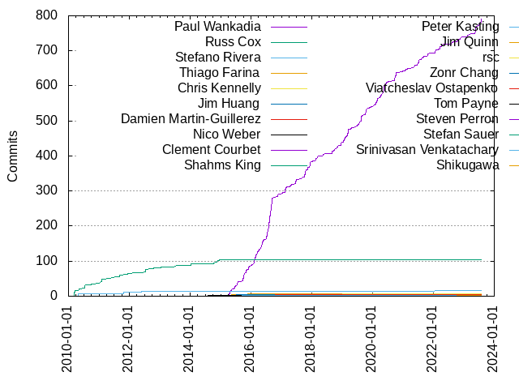

Authors
| Author | Commits (%) | + lines | - lines | First commit | Last commit | Age | Active days | # by commits |
|---|
| Paul Wankadia | 790 (79.56%) | 30099 | 28052 | 2015-04-02 | 2023-07-28 | 3039 days, 8:57:25 | 438 | 1 |
| Russ Cox | 104 (10.47%) | 53762 | 4707 | 2010-03-02 | 2014-12-18 | 1751 days, 19:25:30 | 47 | 2 |
| Stefano Rivera | 16 (1.61%) | 1710 | 839 | 2010-04-16 | 2022-01-16 | 4292 days, 17:55:25 | 10 | 3 |
| Thiago Farina | 8 (0.81%) | 84 | 3609 | 2015-04-08 | 2016-04-12 | 369 days, 8:21:17 | 7 | 4 |
| Chris Kennelly | 7 (0.70%) | 148 | 164 | 2018-02-15 | 2019-02-25 | 374 days, 15:08:13 | 5 | 5 |
| Jim Huang | 4 (0.40%) | 14 | 5 | 2015-07-10 | 2015-07-12 | 2 days, 1:12:03 | 2 | 6 |
| Damien Martin-Guillerez | 4 (0.40%) | 11 | 38 | 2016-01-13 | 2016-10-20 | 280 days, 18:23:47 | 4 | 7 |
| Nico Weber | 3 (0.30%) | 16 | 19 | 2014-06-26 | 2014-12-15 | 172 days, 4:56:23 | 3 | 8 |
| Clement Courbet | 3 (0.30%) | 67 | 62 | 2017-10-10 | 2020-07-03 | 996 days, 19:56:34 | 2 | 9 |
| Shahms King | 2 (0.20%) | 45 | 6 | 2016-03-04 | 2016-06-23 | 111 days, 3:41:52 | 2 | 10 |
| Peter Kasting | 2 (0.20%) | 65 | 61 | 2014-12-09 | 2015-07-21 | 223 days, 22:34:06 | 2 | 11 |
| Jim Quinn | 2 (0.20%) | 50 | 28 | 2022-10-06 | 2022-10-10 | 4 days, 0:45:24 | 2 | 12 |
| rsc | 1 (0.10%) | 1 | 1 | 2011-10-30 | 2011-10-30 | 0:00:00 | 1 | 13 |
| Zonr Chang | 1 (0.10%) | 6 | 4 | 2017-01-12 | 2017-01-12 | 0:00:00 | 1 | 14 |
| Viatcheslav Ostapenko | 1 (0.10%) | 210 | 208 | 2014-01-09 | 2014-01-09 | 0:00:00 | 1 | 15 |
| Tom Payne | 1 (0.10%) | 1 | 0 | 2020-11-15 | 2020-11-15 | 0:00:00 | 1 | 16 |
| Steven Perron | 1 (0.10%) | 9 | 9 | 2019-01-08 | 2019-01-08 | 0:00:00 | 1 | 17 |
| Stefan Sauer | 1 (0.10%) | 12 | 1 | 2015-05-13 | 2015-05-13 | 0:00:00 | 1 | 18 |
| Srinivasan Venkatachary | 1 (0.10%) | 11 | 5 | 2010-07-15 | 2010-07-15 | 0:00:00 | 1 | 19 |
| Shikugawa | 1 (0.10%) | 1 | 1 | 2020-06-25 | 2020-06-25 | 0:00:00 | 1 | 20 |
These didn't make it to the top: Sergei Trofimovich, Robert Sayre, Richard Hansen, Reilly Grant, RIchard Kralovic, Pawel Hajdan, Paul Liétar, Ming Zhao, Mike Nazarewicz, Matthew Hall, Marek Milkovič, Loo Rong Jie, Kyle Gorman, Khem Raj, Jonas Wagner, John Millikin, Joel Zacharias, Joe Atzinger, Jeremy Fincher (corp), Jason Woods, James McKinney, Harry Mallon, Hannah Shi, Han-Wen Nienhuys, Ehsan Nasiri, Doug Kwan, Donatas Saulys, Dominic Battré, Dmitriy Vyukov, Dirk Reinbach, Dean Sturtevant, David Oswald, David Neto, Cédric Krier, Chiu-Hsiang Hsu, Bruce Dawson, Ben Keller, Aric Belsito, Andrei BENCSIK, Alexander Riccio
Only top 20 authors shown
Only top 20 authors shown
| Month | Author | Commits (%) | Next top 5 | Number of authors |
|---|
| 2023-07 | Paul Wankadia | 14 (100.00% of 14) | | 1 |
| 2023-06 | Paul Wankadia | 9 (100.00% of 9) | | 1 |
| 2023-05 | Paul Wankadia | 19 (100.00% of 19) | | 1 |
| 2023-03 | Paul Wankadia | 3 (100.00% of 3) | | 1 |
| 2023-02 | Paul Wankadia | 4 (100.00% of 4) | | 1 |
| 2023-01 | Paul Wankadia | 2 (66.67% of 3) | Khem Raj | 2 |
| 2022-12 | Paul Wankadia | 1 (100.00% of 1) | | 1 |
| 2022-11 | Paul Wankadia | 5 (100.00% of 5) | | 1 |
| 2022-10 | Paul Wankadia | 7 (77.78% of 9) | Jim Quinn | 2 |
| 2022-09 | Paul Wankadia | 1 (100.00% of 1) | | 1 |
| 2022-08 | Paul Wankadia | 6 (100.00% of 6) | | 1 |
| 2022-06 | Hannah Shi | 1 (100.00% of 1) | | 1 |
| 2022-05 | Paul Wankadia | 2 (100.00% of 2) | | 1 |
| 2022-04 | Paul Wankadia | 5 (100.00% of 5) | | 1 |
| 2022-03 | Paul Wankadia | 8 (88.89% of 9) | Sergei Trofimovich | 2 |
| 2022-02 | Paul Wankadia | 2 (100.00% of 2) | | 1 |
| 2022-01 | Paul Wankadia | 9 (90.00% of 10) | Stefano Rivera | 2 |
| 2021-12 | Andrei BENCSIK | 1 (100.00% of 1) | | 1 |
| 2021-11 | Paul Wankadia | 2 (100.00% of 2) | | 1 |
| 2021-10 | Paul Wankadia | 7 (100.00% of 7) | | 1 |
| 2021-09 | Paul Wankadia | 2 (100.00% of 2) | | 1 |
| 2021-08 | Paul Wankadia | 8 (100.00% of 8) | | 1 |
| 2021-07 | Paul Wankadia | 11 (100.00% of 11) | | 1 |
| 2021-06 | Paul Wankadia | 4 (100.00% of 4) | | 1 |
| 2021-05 | Paul Wankadia | 7 (100.00% of 7) | | 1 |
| 2021-04 | Paul Wankadia | 2 (100.00% of 2) | | 1 |
| 2021-03 | Paul Wankadia | 1 (100.00% of 1) | | 1 |
| 2021-02 | Paul Wankadia | 5 (100.00% of 5) | | 1 |
| 2021-01 | Paul Wankadia | 2 (66.67% of 3) | Dirk Reinbach | 2 |
| 2020-12 | Paul Wankadia | 2 (100.00% of 2) | | 1 |
| 2020-11 | Paul Wankadia | 2 (66.67% of 3) | Tom Payne | 2 |
| 2020-10 | Paul Wankadia | 10 (100.00% of 10) | | 1 |
| 2020-09 | Paul Wankadia | 15 (100.00% of 15) | | 1 |
| 2020-07 | Paul Wankadia | 2 (66.67% of 3) | Clement Courbet | 2 |
| 2020-06 | Paul Wankadia | 8 (88.89% of 9) | Shikugawa | 2 |
| 2020-05 | Paul Wankadia | 24 (100.00% of 24) | | 1 |
| 2020-04 | Paul Wankadia | 11 (100.00% of 11) | | 1 |
| 2020-03 | Paul Wankadia | 6 (85.71% of 7) | Donatas Saulys | 2 |
| 2020-02 | Paul Wankadia | 16 (100.00% of 16) | | 1 |
| 2020-01 | Paul Wankadia | 5 (100.00% of 5) | | 1 |
| 2019-12 | Paul Wankadia | 3 (100.00% of 3) | | 1 |
| 2019-11 | Paul Wankadia | 3 (100.00% of 3) | | 1 |
| 2019-10 | Paul Wankadia | 19 (100.00% of 19) | | 1 |
| 2019-08 | Paul Wankadia | 18 (94.74% of 19) | Marek Milkovič | 2 |
| 2019-07 | Paul Wankadia | 14 (100.00% of 14) | | 1 |
| 2019-06 | Paul Wankadia | 2 (100.00% of 2) | | 1 |
| 2019-05 | Paul Wankadia | 2 (100.00% of 2) | | 1 |
| 2019-04 | Paul Wankadia | 4 (80.00% of 5) | Jonas Wagner | 2 |
| 2019-03 | Paul Wankadia | 19 (100.00% of 19) | | 1 |
| 2019-02 | Paul Wankadia | 4 (80.00% of 5) | Chris Kennelly | 2 |
| 2019-01 | Paul Wankadia | 14 (82.35% of 17) | Chris Kennelly, Steven Perron | 3 |
| 2018-12 | Paul Wankadia | 10 (76.92% of 13) | Chris Kennelly | 2 |
| 2018-11 | Paul Wankadia | 4 (100.00% of 4) | | 1 |
| 2018-10 | Paul Wankadia | 8 (100.00% of 8) | | 1 |
| 2018-09 | Paul Wankadia | 4 (100.00% of 4) | | 1 |
| 2018-08 | Paul Wankadia | 6 (75.00% of 8) | Paul Liétar, Dean Sturtevant | 3 |
| 2018-07 | Paul Wankadia | 1 (100.00% of 1) | | 1 |
| 2018-06 | Paul Wankadia | 1 (50.00% of 2) | Ben Keller | 2 |
| 2018-05 | Paul Wankadia | 5 (100.00% of 5) | | 1 |
| 2018-04 | Paul Wankadia | 1 (100.00% of 1) | | 1 |
| 2018-03 | Paul Wankadia | 6 (100.00% of 6) | | 1 |
| 2018-02 | Paul Wankadia | 8 (80.00% of 10) | Robert Sayre, Chris Kennelly | 3 |
| 2018-01 | Richard Hansen | 1 (33.33% of 3) | Paul Wankadia, Loo Rong Jie | 3 |
| 2017-12 | Paul Wankadia | 17 (100.00% of 17) | | 1 |
| 2017-11 | Paul Wankadia | 7 (100.00% of 7) | | 1 |
| 2017-10 | Paul Wankadia | 21 (87.50% of 24) | Clement Courbet, Harry Mallon | 3 |
| 2017-09 | Paul Wankadia | 3 (100.00% of 3) | | 1 |
| 2017-08 | Paul Wankadia | 2 (100.00% of 2) | | 1 |
| 2017-07 | Paul Wankadia | 3 (100.00% of 3) | | 1 |
| 2017-06 | Paul Wankadia | 11 (100.00% of 11) | | 1 |
| 2017-05 | Paul Wankadia | 3 (75.00% of 4) | Ehsan Nasiri | 2 |
| 2017-04 | Paul Wankadia | 5 (100.00% of 5) | | 1 |
| 2017-03 | Paul Wankadia | 3 (75.00% of 4) | David Neto | 2 |
| 2017-02 | Paul Wankadia | 14 (100.00% of 14) | | 1 |
| 2017-01 | Paul Wankadia | 3 (75.00% of 4) | Zonr Chang | 2 |
| 2016-12 | Paul Wankadia | 2 (100.00% of 2) | | 1 |
| 2016-11 | Paul Wankadia | 6 (100.00% of 6) | | 1 |
| 2016-10 | Paul Wankadia | 2 (66.67% of 3) | Damien Martin-Guillerez | 2 |
| 2016-09 | Paul Wankadia | 26 (100.00% of 26) | | 1 |
| 2016-08 | Paul Wankadia | 63 (100.00% of 63) | | 1 |
| 2016-07 | Paul Wankadia | 30 (96.77% of 31) | Cédric Krier | 2 |
| 2016-06 | Paul Wankadia | 2 (66.67% of 3) | Shahms King | 2 |
| 2016-05 | Paul Wankadia | 23 (95.83% of 24) | Jeremy Fincher (corp) | 2 |
| 2016-04 | Paul Wankadia | 9 (69.23% of 13) | Thiago Farina, James McKinney, Damien Martin-Guillerez, Aric Belsito | 5 |
| 2016-03 | Paul Wankadia | 18 (81.82% of 22) | Thiago Farina, Shahms King, RIchard Kralovic, Damien Martin-Guillerez | 5 |
| 2016-02 | Paul Wankadia | 18 (90.00% of 20) | Matthew Hall, Kyle Gorman | 3 |
| 2016-01 | Paul Wankadia | 7 (77.78% of 9) | Stefano Rivera, Damien Martin-Guillerez | 3 |
| 2015-12 | Paul Wankadia | 6 (85.71% of 7) | Reilly Grant | 2 |
| 2015-11 | Paul Wankadia | 13 (92.86% of 14) | Thiago Farina | 2 |
| 2015-10 | Paul Wankadia | 17 (94.44% of 18) | Bruce Dawson | 2 |
| 2015-09 | Paul Wankadia | 9 (100.00% of 9) | | 1 |
| 2015-07 | Paul Wankadia | 12 (66.67% of 18) | Jim Huang, Peter Kasting, Chiu-Hsiang Hsu | 4 |
| 2015-06 | Paul Wankadia | 9 (81.82% of 11) | Joel Zacharias, Alexander Riccio | 3 |
| 2015-05 | Paul Wankadia | 5 (55.56% of 9) | Thiago Farina, Stefan Sauer, David Oswald | 4 |
| 2015-04 | Paul Wankadia | 15 (71.43% of 21) | Thiago Farina, Ming Zhao, Jason Woods, Han-Wen Nienhuys | 5 |
| 2014-12 | Russ Cox | 4 (57.14% of 7) | Peter Kasting, Nico Weber, Joe Atzinger | 4 |
| 2014-11 | Russ Cox | 6 (100.00% of 6) | | 1 |
| 2014-10 | Russ Cox | 2 (100.00% of 2) | | 1 |
| 2014-09 | Nico Weber | 1 (100.00% of 1) | | 1 |
| 2014-06 | Nico Weber | 1 (100.00% of 1) | | 1 |
| 2014-03 | Doug Kwan | 1 (100.00% of 1) | | 1 |
| 2014-01 | Russ Cox | 5 (71.43% of 7) | Viatcheslav Ostapenko, Mike Nazarewicz | 3 |
| 2013-10 | Pawel Hajdan | 1 (100.00% of 1) | | 1 |
| 2013-08 | Russ Cox | 1 (100.00% of 1) | | 1 |
| 2013-07 | Russ Cox | 2 (66.67% of 3) | Dmitriy Vyukov | 2 |
| 2013-06 | Russ Cox | 1 (100.00% of 1) | | 1 |
| 2013-01 | Russ Cox | 3 (100.00% of 3) | | 1 |
| 2012-11 | John Millikin | 1 (100.00% of 1) | | 1 |
| 2012-10 | Russ Cox | 2 (100.00% of 2) | | 1 |
| 2012-08 | Russ Cox | 1 (50.00% of 2) | Dominic Battré | 2 |
| 2012-07 | Russ Cox | 9 (100.00% of 9) | | 1 |
| 2012-05 | Stefano Rivera | 2 (66.67% of 3) | Russ Cox | 2 |
| 2012-03 | Russ Cox | 1 (100.00% of 1) | | 1 |
| 2012-02 | Russ Cox | 1 (100.00% of 1) | | 1 |
| 2012-01 | Stefano Rivera | 1 (100.00% of 1) | | 1 |
| 2011-12 | Russ Cox | 3 (100.00% of 3) | | 1 |
| 2011-10 | Stefano Rivera | 3 (50.00% of 6) | Russ Cox, rsc | 3 |
| 2011-09 | Russ Cox | 5 (100.00% of 5) | | 1 |
| 2011-07 | Russ Cox | 1 (100.00% of 1) | | 1 |
| 2011-06 | Russ Cox | 2 (100.00% of 2) | | 1 |
| 2011-05 | Russ Cox | 3 (100.00% of 3) | | 1 |
| 2011-03 | Russ Cox | 1 (100.00% of 1) | | 1 |
| 2011-02 | Russ Cox | 4 (100.00% of 4) | | 1 |
| 2011-01 | Russ Cox | 9 (100.00% of 9) | | 1 |
| 2010-10 | Russ Cox | 1 (100.00% of 1) | | 1 |
| 2010-09 | Russ Cox | 2 (66.67% of 3) | Stefano Rivera | 2 |
| 2010-08 | Russ Cox | 1 (100.00% of 1) | | 1 |
| 2010-07 | Russ Cox | 10 (90.91% of 11) | Srinivasan Venkatachary | 2 |
| 2010-05 | Russ Cox | 4 (100.00% of 4) | | 1 |
| 2010-04 | Stefano Rivera | 7 (100.00% of 7) | | 1 |
| 2010-03 | Russ Cox | 17 (100.00% of 17) | | 1 |
| Year | Author | Commits (%) | Next top 5 | Number of authors |
|---|
| 2023 | Paul Wankadia | 51 (98.08% of 52) | Khem Raj | 2 |
| 2022 | Paul Wankadia | 46 (90.20% of 51) | Jim Quinn, Stefano Rivera, Sergei Trofimovich, Hannah Shi | 5 |
| 2021 | Paul Wankadia | 51 (96.23% of 53) | Dirk Reinbach, Andrei BENCSIK | 3 |
| 2020 | Paul Wankadia | 101 (96.19% of 105) | Tom Payne, Shikugawa, Donatas Saulys, Clement Courbet | 5 |
| 2019 | Paul Wankadia | 102 (94.44% of 108) | Chris Kennelly, Steven Perron, Marek Milkovič, Jonas Wagner | 5 |
| 2018 | Paul Wankadia | 55 (84.62% of 65) | Chris Kennelly, Robert Sayre, Richard Hansen, Paul Liétar, Loo Rong Jie | 8 |
| 2017 | Paul Wankadia | 92 (93.88% of 98) | Clement Courbet, Zonr Chang, Harry Mallon, Ehsan Nasiri, David Neto | 6 |
| 2016 | Paul Wankadia | 206 (92.79% of 222) | Damien Martin-Guillerez, Thiago Farina, Shahms King, Stefano Rivera, RIchard Kralovic | 12 |
| 2015 | Paul Wankadia | 86 (80.37% of 107) | Thiago Farina, Jim Huang, Stefan Sauer, Reilly Grant, Peter Kasting | 14 |
| 2014 | Russ Cox | 17 (68.00% of 25) | Nico Weber, Viatcheslav Ostapenko, Peter Kasting, Mike Nazarewicz, Joe Atzinger | 7 |
| 2013 | Russ Cox | 7 (77.78% of 9) | Pawel Hajdan, Dmitriy Vyukov | 3 |
| 2012 | Russ Cox | 15 (75.00% of 20) | Stefano Rivera, John Millikin, Dominic Battré | 4 |
| 2011 | Russ Cox | 30 (88.24% of 34) | Stefano Rivera, rsc | 3 |
| 2010 | Russ Cox | 35 (79.55% of 44) | Stefano Rivera, Srinivasan Venkatachary | 3 |
| Domains | Total (%) |
|---|
| google.com | 825 (83.08%) |
|---|
| swtch.com | 105 (10.57%) |
|---|
| gmail.com | 38 (3.83%) |
|---|
| chromium.org | 16 (1.61%) |
|---|
| rivera.za.net | 2 (0.20%) |
|---|
| slashpoundbang.com | 1 (0.10%) |
|---|
| samsung.com | 1 (0.10%) |
|---|
| riccio.com | 1 (0.10%) |
|---|
| mhcomputing.net | 1 (0.10%) |
|---|
| luminatewireless.com | 1 (0.10%) |
|---|